| 日付 | 2017年8月27日（日） |
|---|---|
| 山域 | 谷川 |
| メンバー | 家族（妻、長女・6歳、長男・4歳） |
| 山行形態 | 子連れ日帰り |
| アクセス | 車、ロープウェイ |
| ルート (Map) | 天神平 (8:20) - (9:05) 熊穴沢ノ頭避難小屋 - (10:48) 谷川岳 - (11:02) 肩の小屋 (11:47) - (12:43) 熊穴沢ノ頭避難小屋 - (13:32) 天神平 |
2ヶ月半ぶりの山登り。
こんなに長い間山登りに行けなかったのは、娘が産まれた直後くらいだ。
とにかく今年の夏は天気が悪かった。
本日は絶好の快晴という訳ではないが、北部は晴れ間が出そうな予報になっている。
久々の山登りなので、少し遠出して谷川岳に登ってみることにする。
谷川岳ロープウェイの施設に到着。
ロープウェイ利用者なのに駐車場は有料だ…
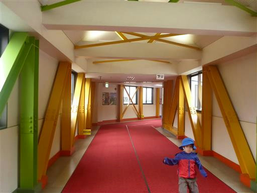
チケットを買って乗り場に移動する。時刻は8時。
到着してから朝食をとったので、出発が遅くなってしまった。

ロープウェイで天神平を目指す。予報の割に空模様は今一だ。
関越道から眺めた限りでは榛名も赤城も浅間も雲に覆われていた。
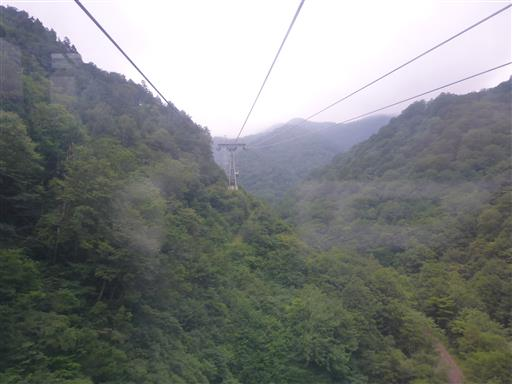
天神平に到着。標高1320m。
残念ながら展望はない。
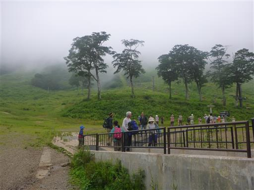
ここからさらにリフトで上まで行くことができるが、ここから歩き始める。
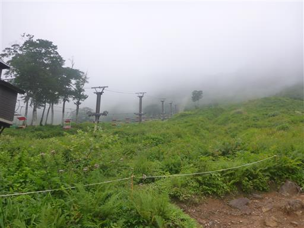
多くの登山者が利用するルートだけあって、登山道はよく整備されている。
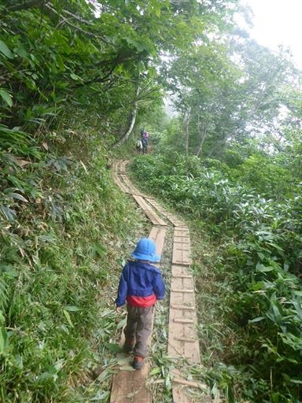
案外岩がちな地形で、ところどころに小さな岩場がある。
子供たちは難なく登っていく。
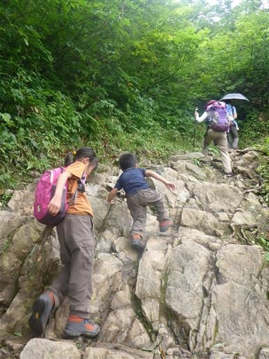
基本的には樹林帯に覆われた登山道だが、ところどころで展望が見渡せそうな場所がある。
晴れていればどのような景色が広がったのだろう？
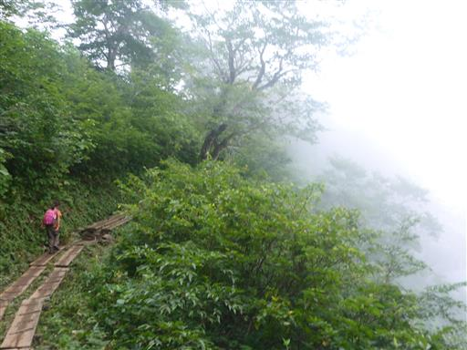
岩場のトラバース。ちょっと嫌らしい場所だ。
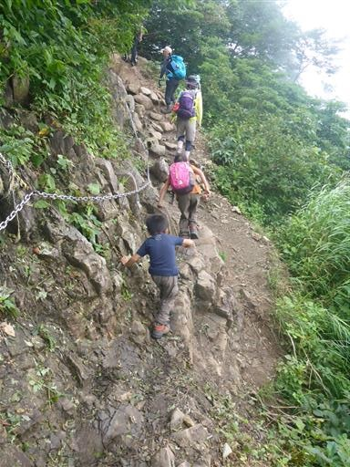
熊穴沢ノ頭避難小屋に到着。ここまでは良いペースだ。
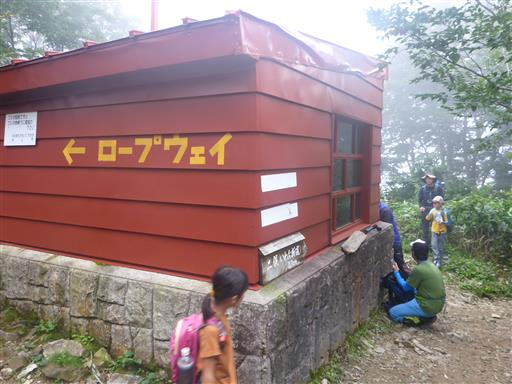
娘はこういった建物が大好きで、早速中を覗いている。
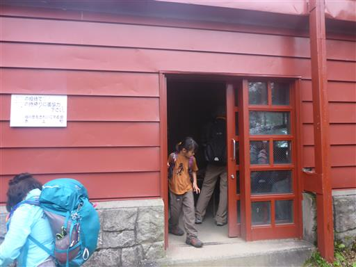
ところどころに岩場が現れる。登山者の数がだんだん増えてきた。
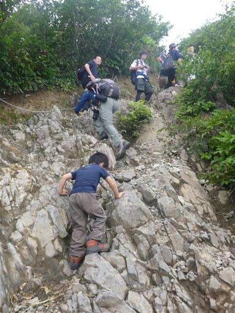
しばらく進むと完全に渋滞が発生してしまっている。
ところどころにある岩場が渋滞ポイントのようだ。
紅葉の時期ならいざ知らず、この時期にこんなに混雑するとは予想外だった。
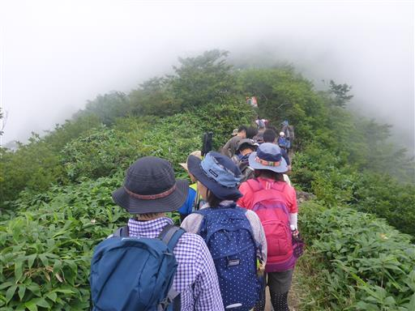
渋滞は山頂近くまで続き、待たされながら登って行くとようやく山頂が見えてきた。
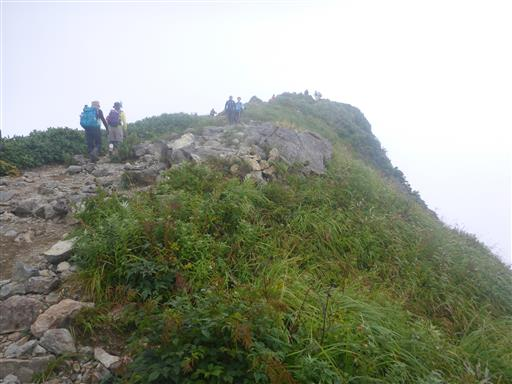
足下にはオヤマリンドウなど、秋の花が咲いている。
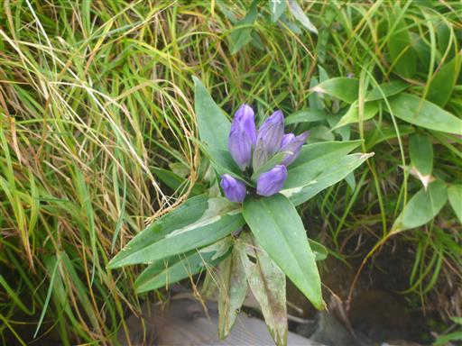
赤い実がなっている。おいしそうな色だ。
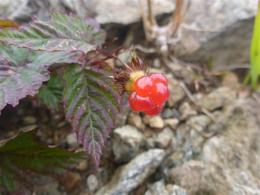
谷川岳山頂に到着する。標高1963m。
こちらはトマの耳と呼ばれるピークだ。
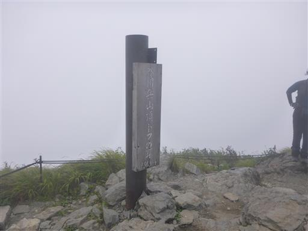
山頂は多くの人が代わる代わる写真撮影をしている。
残念ながら展望は全くない。前回来た時は絶景が広がったのだが…
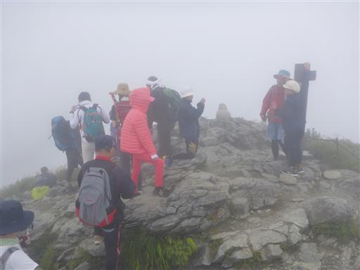
一瞬だけオキの耳が見えたが、すぐに見えなくなってしまった。
オキの耳の方が少しだけ標高が高い。
この天気では行く意味もあまり無いため、今回はスキップする。
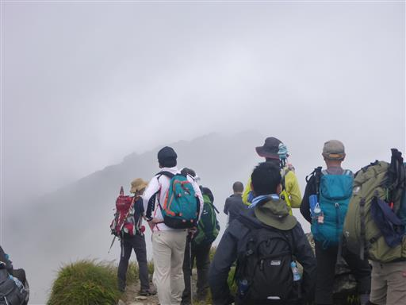
山頂は狭くて混雑していたため、少し下ったところにある
肩の小屋の休憩スペースで昼食をとることにする。
幸い小屋に入る人は少なく、中は比較的空いている。
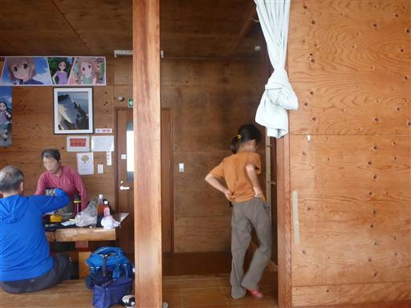
昼食をとったら下山開始。まだ続々と登山者が登ってくる。
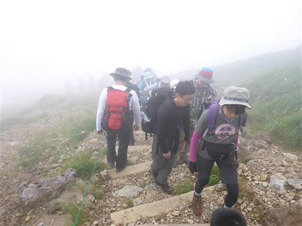
登りの時ほどひどくないが、すれ違いポイントなどで少々渋滞が発生。
本当に人が多い山だ。
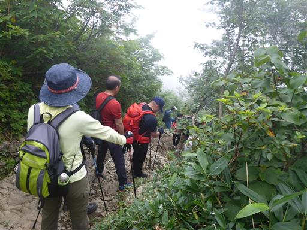
息子は手をつながなくても、ある程度スムーズに下れるようになってきた。
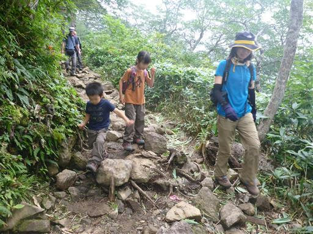
木道の終端で地面に降りる。いくら何でも段差があり過ぎる。
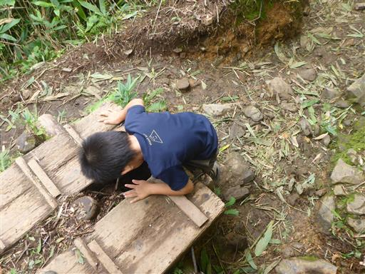
少し雲が上がって、白毛門方面の山が少しだけ見えるようになってきた。
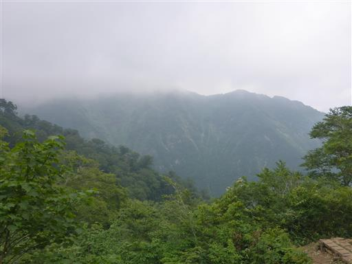
しばらく下ると視界が開け、天神平が見えてくる。
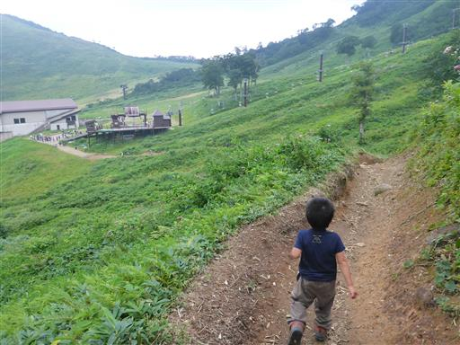
周囲はお花畑が広がる。
ヨツバヒヨドリやミヤマアキノキリンソウなどの秋の少々地味な花々だ。
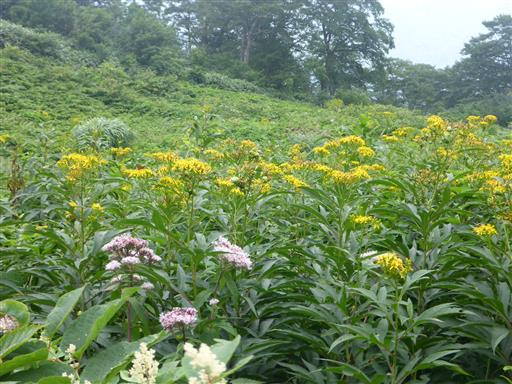
少し青空が見えてくる。天気は回復傾向だが、残念ながら下山の時刻だ。
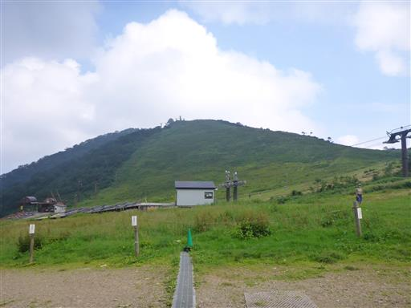
ロープウェイ乗り場には行列ができている。
次々とゴンドラが来るので、それほど待たずに乗れる。
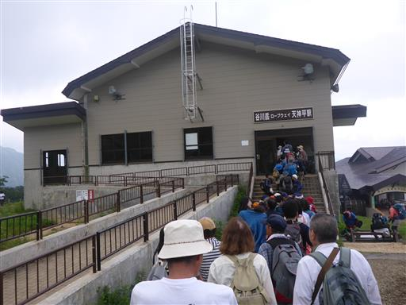
景色を眺めながら下山する。
思い通りの天候にならず、登山道は大混雑で散々な登山だったが、
久しぶりに山歩きをすることができ、充実した一日だった。
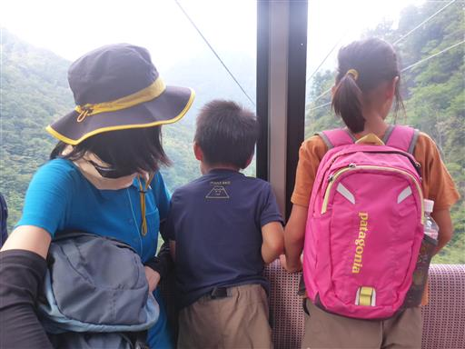